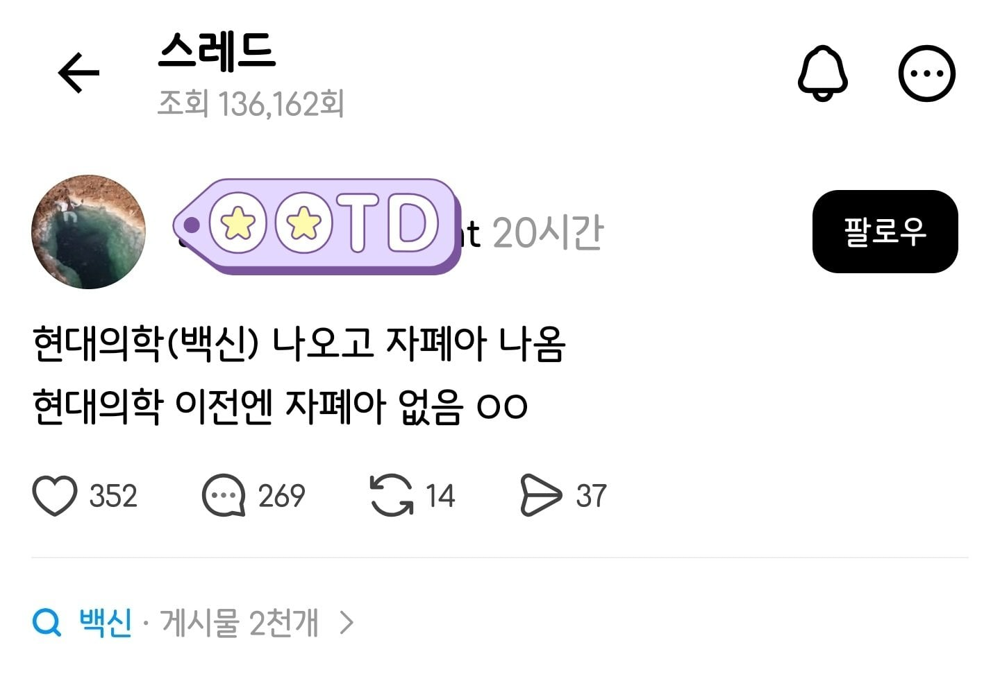
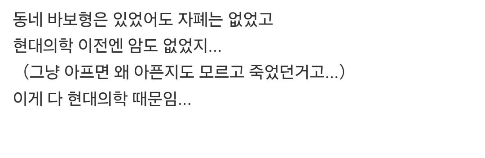

저런놈들도 오래노래 살게 해주는게 현대의학


저런놈들도 오래노래 살게 해주는게 현대의학
저런 애도 인터넷에 글 쓸 수 있다는것 만으로 현대 의학은 승리한거지
같은 원리로 코로나 검사를 하지 않으면 확진자가 없다....도 있지
회사 동료가 감기나 너무 심해서 병원 가서 코로나검사 하자고 하니까
의사 왈: 해서 코로나면... 뭐 어쩌시게요???
그래서 그냥 왔대 ㅡ,.ㅡ;
그건 제대로 된 의사네.
의사 입장에선 저렇게 말하는것보다 말 안섞고 원하는대로 검사해서 돈 버는게 훨씬 낫고 편하지.
뭐 어쩌시게요?의 의미는
코로나는 이제 격리해야될 질병도 아니고, 치료제 대상군이 아닌이상 코로나 양성이 나오더라도 치료방법이 달라지지도 않음.
존나 양심적이니 그 병원만 가라고 해줘라.
코로나 검사 병원가서 하면 비싼데
굳이 하고싶으면 편의점에서 키트 사서 하라그래 ㅋㅋ
무려 미국 대통령이 내세웠던 논리
측정기술이 발전함에 따라 지진 발생횟수도 늘어남 ㅋㅋㅋ
산소를 발견하기 전엔 숨 안쉬고 살았냐ㅋㅋㅋㅋ
이거 레알임. 컬러사진 발명 전엔 세상이 흑백이였음
애 태어나면 뒤지는 경우가 허다했는데 이젠 살려놓으니까...
기술 때문에 예전보다 폭발적으로 늘어난건 근시 아닌가
아까 낮에본 달착륙 안믿을 자유 운운하던 병신 생각나네
거북배 라고 이미 말기암 환자중에 배가 딱딱해지는 그런 증상을 보고 병 이름을 명명지었음 현대의학 나오기전부터 있던거임
레이더 때문에 적 비행기가 생겼다
태어나지 않았으면 죽지도 않았을텐데 급의 논리군
주식시장 생긴 게 깡통계좌 이유인 건가?
하긴, 지능검사 나오기 전엔 저능아라는 말이 없었지.
그런자폐아는 보통 동네에서 알아서 폐기처분했음
현대 의학의 위대함을 보여주기 위해 각종 문헌과 자료를 들이밈 -> 지루하고 현학적임
쓰레드에 똥글 쌈 -> 현대의학의 위대함을 다른 사람들로 하여금 깨닫게함